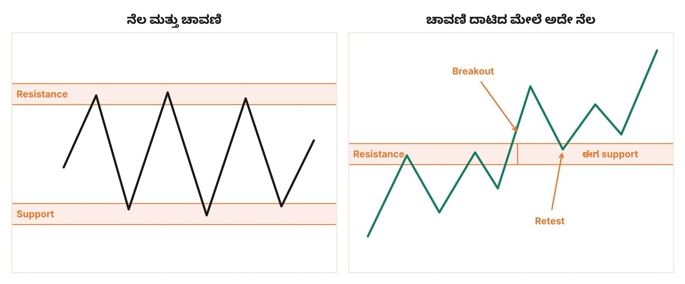
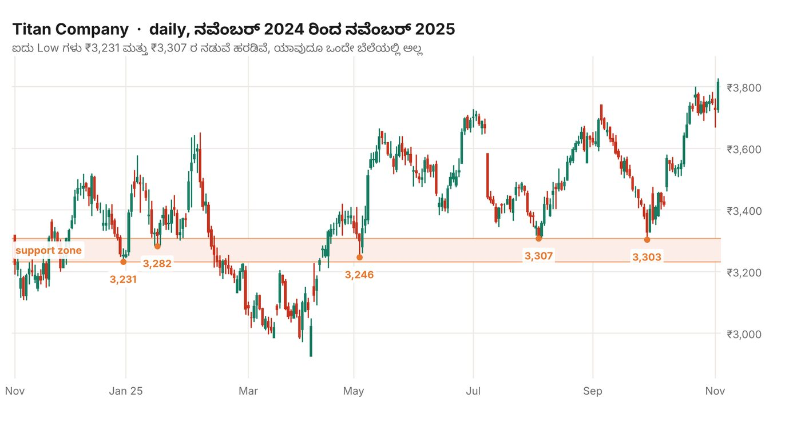
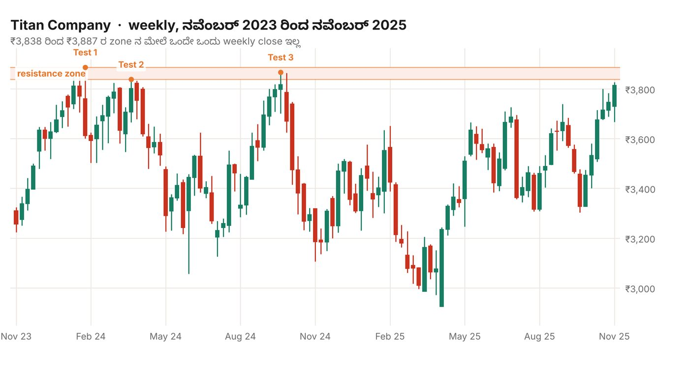
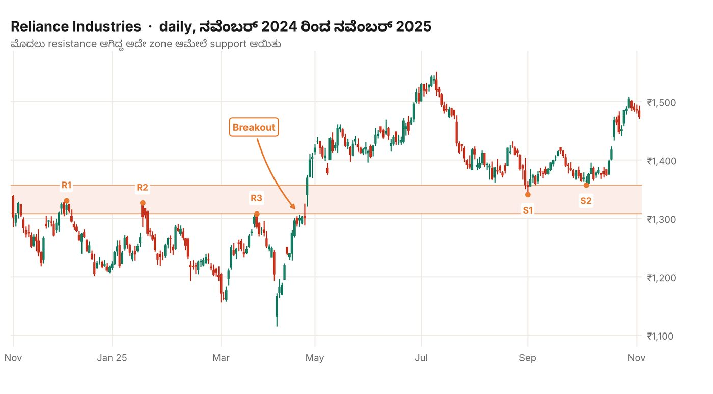

01
ಪರೀಕ್ಷಿಸಿದ ನಿಯಮಗಳು
ಇಲ್ಲಿ ಹೇಳಿದ ನಿಯಮಗಳನ್ನು NSE ಯ ನಿಜವಾದ ಬೆಲೆಗಳ ಮೇಲೆ ಪರೀಕ್ಷಿಸಿದ್ದೇವೆ. ಕೆಲವು ಕೆಲಸ ಮಾಡಿದವು, ಕೆಲವು ಪುಸ್ತಕಗಳಲ್ಲಿ ಹೇಳುವಷ್ಟು ಮಾಡಲಿಲ್ಲ. ಎರಡನ್ನೂ ನೇರವಾಗಿ ಹೇಳಿದ್ದೇವೆ.
Wealthoria · Opens 23 Nov
“A Complete Technical Analysis Guide” ಕನ್ನಡದಲ್ಲಿ
Whispers Beyond Candlesticks
ಮಾರುಕಟ್ಟೆಯ ಚಲನವಲನದ ಭಾಷೆ
ಬೆಲೆ ಪಿಸುಗುಟ್ಟುತ್ತದೆ. ಕೇಳಿಸಿಕೊಳ್ಳುವವರು ಕೆಲವರು ಮಾತ್ರ.
NSE ಯ ನಿಜವಾದ chart ಗಳ ಮೂಲಕ technical analysis ಕಲಿಸುವ ಕನ್ನಡ ಪುಸ್ತಕ. ಇಲ್ಲಿ ಹೇಳಿದ ನಿಯಮಗಳನ್ನು NSE ಯ ನಿಜವಾದ ಬೆಲೆಗಳ ಮೇಲೆ ಪರೀಕ್ಷಿಸಿದ್ದೇವೆ.
Pre-booking 23 ನವೆಂಬರ್ ರಿಂದ 12 ಡಿಸೆಂಬರ್ 2026, ರಾತ್ರಿ 11:59 ರವರೆಗೆ, 20 ದಿನ ಮಾತ್ರ. ಡಿಸೆಂಬರ್ 13 ರಿಂದ ₹1499.

140 × 216 mm · 500+ ಪುಟ · ಬಣ್ಣದ chart ಗಳು
ಒಂದು chart, ಒಂದು ಪಾಠ
ಡಿಸೆಂಬರ್, ಜನವರಿ, ಮಾರ್ಚ್. ₹1,330, ₹1,326, ₹1,308. ಮೂರು ಸಲ ಬೆಲೆ ಒಂದೇ zone ಗೆ ಬಂದು ಕೆಳಗೆ ತಿರುಗಿತು. ಇದು Resistance.
ಏಪ್ರಿಲ್ 28. Close ₹1,368.8, zone ನ ಮೇಲೆ. Breakout.
ಬೆಲೆ ಓಡಿತು. ಈಗ ಕೊಳ್ಳದಿದ್ದರೆ ತಪ್ಪಿಹೋಗುತ್ತದೆ ಅನ್ನಿಸುತ್ತದೆ. ಆದರೆ ಹಿಂಬಾಲಿಸಬೇಕಾಗಿಲ್ಲ.
ನಾಲ್ಕು ತಿಂಗಳು ಬೆಲೆ ಅದೇ zone ಗೆ ಬಂದು ಮುಟ್ಟಿ ಮೇಲೆ ಹೋಯಿತು. Resistance ಆಗಿದ್ದದ್ದು ಈಗ Support.
ಕಾಯುವವರಿಗೆ ಎರಡನೇ ಅವಕಾಶ. ಯಾಕೆ ಹೀಗಾಗುತ್ತದೆ ಅಂತ ಪುಸ್ತಕದ 4ನೇ ಅಧ್ಯಾಯ ಹೇಳುತ್ತದೆ. ಆ ಅಧ್ಯಾಯ ಓದಿ
Reliance Industries, daily, ನವೆಂಬರ್ 2024 ರಿಂದ ನವೆಂಬರ್ 2025. ಪುಸ್ತಕದ ಚಿತ್ರ 4.3 ರ ಬೆಲೆಗಳು.
ಈ ಪುಸ್ತಕ ಹುಟ್ಟಿದ್ದು ಯಾಕೆ
Market ನಲ್ಲಿ ಕೆಲವು ವರ್ಷ ಕಳೆದವರು ನಮ್ಮನ್ನು ಕೇಳುವ ಪ್ರಶ್ನೆ ಇದು. ಈ ಪುಸ್ತಕ ಆ ಪ್ರಶ್ನೆಯಿಂದ ಶುರುವಾಯಿತು.
ಇಲ್ಲಿ ಹೇಳಿದ ನಿಯಮಗಳನ್ನು NSE ಯ ನಿಜವಾದ ಬೆಲೆಗಳ ಮೇಲೆ ಪರೀಕ್ಷಿಸಿದ್ದೇವೆ. ಕೆಲವು ಕೆಲಸ ಮಾಡಿದವು, ಕೆಲವು ಪುಸ್ತಕಗಳಲ್ಲಿ ಹೇಳುವಷ್ಟು ಮಾಡಲಿಲ್ಲ. ಎರಡನ್ನೂ ನೇರವಾಗಿ ಹೇಳಿದ್ದೇವೆ.
Titan, Reliance, ITC, HDFC Bank ನಂತಹ company ಗಳ ಬೆಲೆ, NSE ಯಲ್ಲಿ ಆ ದಿನ ನಿಜವಾಗಿ trade ಆದ ಹಾಗೇ. ಯಾವ ಸಂಖ್ಯೆಯನ್ನು ಬೇಕಾದರೂ ನೀವೇ NSE ಯಲ್ಲಿ ಹೋಲಿಸಿ ನೋಡಬಹುದು.
ಎಲ್ಲ ಅಭ್ಯಾಸವನ್ನೂ TradingView ನ free version, Chartink ಮತ್ತು NSE website ನಲ್ಲೇ ಮಾಡಬಹುದು. Paid software ಬೇಕಿಲ್ಲ.
ಪ್ರತಿ ಅಧ್ಯಾಯದಲ್ಲಿ Chart It Yourself, Common Mistake, ಬಳಸುವ ಕ್ರಮ, ಐದು ಪ್ರಶ್ನೆ ಮತ್ತು ಸಾರಾಂಶ. ಪ್ರತಿ ಭಾಗದ ಕೊನೆಯಲ್ಲಿ cheat sheet. ಪುಸ್ತಕ ಮುಗಿಯುವ ಹೊತ್ತಿಗೆ ಬರೆದಿಟ್ಟ ನಿಯಮಗಳ ಜೊತೆ ನಿಮ್ಮದೇ plan.
ಹೇಳುವುದು vs data ತೋರಿಸಿದ್ದು
Technical analysis ಪುಸ್ತಕಗಳಲ್ಲಿ ಮತ್ತೆ ಮತ್ತೆ ಬರುವ ಮಾತುಗಳು. ನಾವು ಅವನ್ನು NSE ಬೆಲೆಗಳ ಮೇಲೆ ಪರೀಕ್ಷಿಸಿದೆವು.
ಹೇಳುವುದು"ಈ level ಐದು ಸಲ ಬೆಲೆಯನ್ನು ಹಿಡಿದಿದೆ, ಹಾಗಾಗಿ ತುಂಬಾ ಬಲವಾಗಿದೆ."
Dataಮತ್ತೆ ಮತ್ತೆ test ಆದ zone ಬಲ ಆಗುವುದಿಲ್ಲ. ಪ್ರತಿ test ಅಲ್ಲಿ ಕಾಯುತ್ತಿರುವ order ಗಳನ್ನು ಕಡಿಮೆ ಮಾಡುತ್ತದೆ.
ಅಧ್ಯಾಯ 4: Support ಮತ್ತು Resistance
ಹೇಳುವುದು"Pivot level ಗಳಲ್ಲಿ ಬೆಲೆ ತಿರುಗುತ್ತದೆ."
Data450 ದಿನದ ತಿರುವುಗಳಲ್ಲಿ 54% pivot level ಗಳ ಹತ್ತಿರ ಬಂದವು. ಅರ್ಥವಿಲ್ಲದ level ಗಳಿಗೂ 52%. ವಿಶೇಷ ಬಲ ಕಾಣಲಿಲ್ಲ.
ಅಧ್ಯಾಯ 4: 11 company, 2,580 ದಿನದ data
ಹೇಳುವುದು"₹100, ₹500, ₹1,000 ರ ಹಾಗಿನ round number ಗಳಲ್ಲಿ ಬೆಲೆ ತಿರುಗುತ್ತದೆ."
Dataಈ ಪುಸ್ತಕದ data ದಲ್ಲಿ round number ಗಳಿಗೆ ವಿಶೇಷ ಬಲ ಕಾಣಲಿಲ್ಲ. ಆದರೂ ನಿಮ್ಮ stop loss ಅನ್ನು ಅಲ್ಲಿ ಇಡಬೇಡಿ. ಯಾಕೆ ಅಂತ ಪುಸ್ತಕದಲ್ಲಿದೆ.
ಅಧ್ಯಾಯ 4: Support ಮತ್ತು Resistance
ಹೇಳುವುದು"Top ನಲ್ಲೇ ಮಾರಿ, ಪೂರ್ತಿ ಲಾಭ ತೆಗೆದುಕೊಳ್ಳಿ."
DataTop ಯಾವುದು ಅಂತ ಅದು ಆದ ಮೇಲೆ ಮಾತ್ರ ಗೊತ್ತಾಗುತ್ತದೆ. ಪರೀಕ್ಷೆಯಲ್ಲಿ 3 ATR trailing stop loss ಎಲ್ಲಕ್ಕಿಂತ ಹೆಚ್ಚು ಕೊಟ್ಟಿತು: ಸರಾಸರಿ ಗೆಲುವು +2.53R.
ಅಧ್ಯಾಯ 23: Stop Loss ಮತ್ತು Position Sizing
ನೀವೇ ಊಹಿಸಿ
ಪುಸ್ತಕದ ಅಧ್ಯಾಯಗಳ ಕೊನೆಯ ಪ್ರಶ್ನೆಗಳಿಂದ ಮೂರು. ಒಂದು ಉತ್ತರ ಆರಿಸಿ, ಪುಸ್ತಕ ಏನು ಹೇಳುತ್ತದೆ ನೋಡಿ.
ಪ್ರಶ್ನೆ 1 · ಅಧ್ಯಾಯ 3
ಈಗಲೇ ಬೇಡ. ದಿನದ ನಡುವೆ ಮುಟ್ಟಿದ್ದು ಲೆಕ್ಕ ಅಲ್ಲ, close ಲೆಕ್ಕ. ಬೆಲೆ ₹440 ರ ಮೇಲೆ close ಆದರೆ ಅದು breakout. Reliance ನಲ್ಲಿ ಎರಡೂವರೆ ತಿಂಗಳ range, ₹1,432 ರ ಮೇಲೆ close ಆದ ದಿನ ಮುಗಿಯಿತು.
ಪ್ರಶ್ನೆ 2 · ಅಧ್ಯಾಯ 4
ಇಲ್ಲ. ಪ್ರತಿ test ಅಲ್ಲಿ ಕಾಯುತ್ತಿರುವ order ಗಳನ್ನು ಕಡಿಮೆ ಮಾಡುತ್ತದೆ. ಹೆಚ್ಚು ಸಲ test ಆದ zone break ಆಗುವ ಸಾಧ್ಯತೆ ಹೆಚ್ಚು. ITC ಯ zone ಮೂರು ಸಲ ತಡೆದು ನಾಲ್ಕನೇ ಸಲ break ಆಯಿತು.
ಪ್ರಶ್ನೆ 3 · ಅಧ್ಯಾಯ 11
ಹೊರಗೆ ಬನ್ನಿ. ಆ trade ಮುಗಿಯಿತು. Fail ಆದ pattern ಉಲ್ಟಾ ದಿಕ್ಕಿಗೆ ವೇಗವಾಗಿ ಓಡುತ್ತದೆ. ಅರ್ಧದಷ್ಟು ಸಲ 9% ಕ್ಕಿಂತ ಹೆಚ್ಚು.
ಉಳಿದ 152 ಪ್ರಶ್ನೆ, ಉತ್ತರದ ಜೊತೆ, ಪುಸ್ತಕದಲ್ಲಿ.
ಏಳು ಭಾಗ, 29 ಅಧ್ಯಾಯ
Chart ಓದುವುದರಿಂದ ಶುರು. ಆಮೇಲೆ pattern, indicator, Wyckoff, volume profile ನಂತಹ tool ಗಳು. ಕೊನೆಯಲ್ಲಿ trading plan, stop loss, position size ಮತ್ತು ಮನಸ್ಸಿನ ಶಿಸ್ತು.
ಉಚಿತ ಮಾದರಿ ಅಧ್ಯಾಯ
Reliance ನಲ್ಲಿ breakout ನಂತರ ನಾಲ್ಕು ತಿಂಗಳು ಬೆಲೆ ಅದೇ zone ಗೆ ಬಂದು ಮುಟ್ಟಿ ಮೇಲೆ ಹೋಯಿತು. ಯಾಕೆ ಅಂತ ಪುಸ್ತಕದ 4ನೇ ಅಧ್ಯಾಯ ಹೇಳುತ್ತದೆ. ಪುಟದಲ್ಲಿ ಇರುವ ಹಾಗೇ, ನಿಜವಾದ chart ಗಳ ಜೊತೆ.
ಅಧ್ಯಾಯ 4
ಅಧ್ಯಾಯ 3 ರಲ್ಲಿ ನೀವು structure ನೋಡಿದ್ದೀರಿ. ಬೆಲೆ up ಆಗುತ್ತದೆ, down ಆಗುತ್ತದೆ, ಮತ್ತೆ up ಆಗುತ್ತದೆ. ಆದರೆ ಅದು down ಆಗಿ ಎಲ್ಲಿ ನಿಲ್ಲಬೇಕು ಅಂತ ಯಾರು ತೀರ್ಮಾನ ಮಾಡುತ್ತಾರೆ? ಉತ್ತರ ಸರಳ. ಜನರ ನೆನಪು. ನೀವು ಒಂದು share ಅನ್ನು ₹500 ಕ್ಕೆ ಕೊಂಡಿದ್ದೀರಿ ಅಂದುಕೊಳ್ಳಿ. ಬೆಲೆ ₹400 ಕ್ಕೆ ಬಿತ್ತು. ನೀವು ಮಾರಲಿಲ್ಲ, ಕಾದಿರಿ. ಈಗ ಬೆಲೆ ಮತ್ತೆ ₹495 ಕ್ಕೆ ಬಂದಿದೆ. ನಿಮ್ಮ ಮನಸ್ಸಿನಲ್ಲಿ ಇರುವುದು ಒಂದೇ ಯೋಚನೆ: ನಷ್ಟ ಇಲ್ಲದೆ ಹೊರಗೆ ಬರಬೇಕು. ಬೆಲೆ ₹500 ಮುಟ್ಟಿದ ತಕ್ಷಣ ನೀವು ಮಾರುತ್ತೀರಿ. ಹೀಗೆ ಯೋಚಿಸುವವರು ನೀವೊಬ್ಬರೇ ಅಲ್ಲ. ಅದೇ ಬೆಲೆಗೆ ಕೊಂಡವರು ಸಾವಿರಾರು ಜನ ಇದ್ದಾರೆ. ಅವರೆಲ್ಲರ ಮಾರಾಟ ಒಟ್ಟಿಗೆ ಬಂದಾಗ ಬೆಲೆ ಅಲ್ಲಿ ನಿಲ್ಲುತ್ತದೆ. ಇದೇ Resistance. ಇದರ ಉಲ್ಟಾ ಕೂಡ ನಿಜ. ₹400 ರಲ್ಲಿ ಕೊಳ್ಳಲು ಆಗದೆ ಬೇಸರ ಮಾಡಿಕೊಂಡವರು ಇರುತ್ತಾರೆ. ಬೆಲೆ ಮತ್ತೆ ₹400 ಕ್ಕೆ ಬಂದರೆ ಅವರು ಈ ಸಲ ಬಿಡುವುದಿಲ್ಲ, ಕೊಳ್ಳುತ್ತಾರೆ. ಅವರು ಕೊಳ್ಳುವುದರಿಂದ ಬೆಲೆ ಅಲ್ಲಿ ನಿಲ್ಲುತ್ತದೆ. ಇದೇ Support.
ಇದಕ್ಕೆ ಇನ್ನೊಂದು ಕಾರಣವೂ ಇದೆ: stop loss. ಹೆಚ್ಚಿನವರು stop loss ಅನ್ನು ಹಿಂದಿನ Low ನ ಸ್ವಲ್ಪ ಕೆಳಗೆ ಇಡುತ್ತಾರೆ. ಅಂದರೆ ಆ ಜಾಗದಲ್ಲಿ ಸಾವಿರಾರು ಮಾರಾಟದ order ಗಳು ಕಾಯುತ್ತಿರುತ್ತವೆ. ಬೆಲೆ ಅಲ್ಲಿಗೆ ಹೋದರೆ ಅವೆಲ್ಲ ಒಟ್ಟಿಗೆ ಬಂದು ಬೆಲೆ ವೇಗವಾಗಿ ಬೀಳುತ್ತದೆ. ಹಾಗಾಗಿ Support ಮತ್ತು Resistance ಅನ್ನುವುದು chart ನಲ್ಲಿ ಕಾಣುವ ಮಾಯ ಅಲ್ಲ. ಅದು ಆ ಬೆಲೆಯಲ್ಲಿ ಕಾಯುತ್ತಿರುವ order ಗಳ ಗುಂಪು. ಈ ಒಂದು ಮಾತು ನಿಮಗೆ ನೆನಪಿದ್ದರೆ, ಈ ಅಧ್ಯಾಯದ ಉಳಿದ ಎಲ್ಲವೂ ಸುಲಭವಾಗಿ ಅರ್ಥ ಆಗುತ್ತದೆ.
ಇದನ್ನು ನೆನಪಿಡಲು ಒಂದು ಸರಳ ಹೋಲಿಕೆ ನೋಡಿ. ನೀವು ಒಂದು ಕೋಣೆಯ ಒಳಗೆ ಚೆಂಡು ಎಸೆದರೆ, ಅದು ನೆಲಕ್ಕೆ ಬಿದ್ದು ಮೇಲೆ ಪುಟಿಯುತ್ತದೆ. ಚಾವಣಿಗೆ ತಾಗಿ ಕೆಳಗೆ ಬರುತ್ತದೆ. Support ಅಂದರೆ ನೆಲ. Resistance ಅಂದರೆ ಚಾವಣಿ. ಈಗ ಚೆಂಡು ಚಾವಣಿಯನ್ನು ಒಡೆದು ಮೇಲಿನ ಮಹಡಿಗೆ ಹೋಯಿತು ಅಂದುಕೊಳ್ಳಿ. ಕೆಳಗಿನ ಕೋಣೆಯ ಚಾವಣಿಯೇ ಮೇಲಿನ ಕೋಣೆಯ ನೆಲ. ಚೆಂಡು ಈಗ ಅದರ ಮೇಲೆ ಬಿದ್ದು ಪುಟಿಯುತ್ತದೆ.

ಎಡದ ಚಿತ್ರದಲ್ಲಿ ಬೆಲೆ ಎರಡು zone ಗಳ ನಡುವೆ ಓಡಾಡುತ್ತಿದೆ. ಬಲದ ಚಿತ್ರದಲ್ಲಿ ಅದು Resistance ದಾಟಿದೆ. ಆಮೇಲೆ ಮತ್ತೆ ಅದೇ zone ಗೆ ಬಂದು, ಅಲ್ಲಿಂದ ಮೇಲೆ ಹೋಗಿದೆ. ಈ ಅಧ್ಯಾಯದಲ್ಲಿ ನೀವು ನೋಡುವ ಎಲ್ಲ chart ಗಳೂ ಈ ಎರಡು ಚಿತ್ರಗಳ ನಿಜವಾದ ಉದಾಹರಣೆಗಳು.
ಹೆಚ್ಚಿನವರು ಮಾಡುವ ಮೊದಲ ತಪ್ಪು ಇದು. Chart ನಲ್ಲಿ ಒಂದು ತೆಳು line draw ಮಾಡಿ, "Support ₹3,231 ರಲ್ಲಿ ಇದೆ" ಅಂತ ಬರೆದುಕೊಳ್ಳುತ್ತಾರೆ. ಬೆಲೆ ಹಾಗೆ ನಡೆಯುವುದಿಲ್ಲ.

Chart ನಲ್ಲಿ ನಾವು ಗುರುತು ಹಾಕಿರುವ ಐದು Low ಗಳನ್ನು ನೋಡಿ. ಒಂದೊಂದರ ಬೆಲೆ ಹೀಗಿದೆ:
| ದಿನಾಂಕ | Low |
|---|---|
| 31 ಡಿಸೆಂಬರ್ 2024 | ₹3,231 |
| 16 ಜನವರಿ 2025 | ₹3,282 |
| 6 ಮೇ 2025 | ₹3,246 |
| 1 ಆಗಸ್ಟ್ 2025 | ₹3,307 |
| 26 ಸೆಪ್ಟೆಂಬರ್ 2025 | ₹3,303 |
ಐದರಲ್ಲಿ ಯಾವ ಎರಡೂ ಒಂದೇ ಬೆಲೆಯಲ್ಲಿ ಇಲ್ಲ. ಅತಿ ಕೆಳಗಿನದು ₹3,231, ಅತಿ ಮೇಲಿನದು ₹3,307. ಎರಡರ ನಡುವೆ ₹76, ಅಂದರೆ 2.4% ದೂರ ಇದೆ. ನೀವು ₹3,231 ರಲ್ಲಿ ಒಂದು line draw ಮಾಡಿ, "ಬೆಲೆ ಅಲ್ಲಿಗೆ ಬಂದಾಗ ಕೊಳ್ಳುತ್ತೇನೆ" ಅಂತ ಕಾದಿದ್ದರೆ ಏನಾಗುತ್ತಿತ್ತು? ಐದರಲ್ಲಿ ನಾಲ್ಕು ಸಲ ನಿಮ್ಮ order ಆಗುತ್ತಲೇ ಇರಲಿಲ್ಲ. ಬೆಲೆ ಅಲ್ಲಿಗೆ ಬರದೆ ಮೇಲೆ ತಿರುಗಿತು. ಅದಕ್ಕೇ ಇದನ್ನು ನೀವು zone ಅಂತ ನೋಡಬೇಕು: ₹3,231 ರಿಂದ ₹3,307. ಬೆಲೆ ಆ zone ನ ಒಳಗೆ ಬಂದರೆ ಸಾಕು, ಆಗ ಗಮನ ಕೊಡಿ. Zone ಎಷ್ಟು ಅಗಲ ಇರಬೇಕು ಅನ್ನುವುದಕ್ಕೆ ಒಂದು ಸರಳ ಲೆಕ್ಕ ಇದೆ. ಬೆಲೆ ಆ ಜಾಗದಲ್ಲಿ ಹಿಂದೆ ಮೂರು ನಾಲ್ಕು ಸಲ ತಿರುಗಿರುತ್ತದೆ. ಅವುಗಳಲ್ಲಿ ಅತಿ ಕೆಳಗಿನ ಮತ್ತು ಅತಿ ಮೇಲಿನ ಬೆಲೆ ತೆಗೆದುಕೊಳ್ಳಿ. ಆ ಎರಡರ ನಡುವಿನ ಜಾಗವೇ ನಿಮ್ಮ zone.
ಇಲ್ಲಿ ಇನ್ನೊಂದು ವಿಷಯವನ್ನು ನಿಮಗೆ ನೇರವಾಗಿ ಹೇಳಬೇಕು. ಅದೇ chart ನಲ್ಲಿ 2025 ರ ಮಾರ್ಚ್ ಮತ್ತು ಏಪ್ರಿಲ್ ನೋಡಿ. ಬೆಲೆ ಆ zone ನ ಕೆಳಗೆ ಹೋಯಿತು, ₹2,925 ರವರೆಗೆ. ಇಪ್ಪತ್ತೈದು ದಿನ zone ನ ಕೆಳಗೇ close ಆಯಿತು. ಅಂದರೆ zone ಒಂದು ಗೋಡೆ ಅಲ್ಲ. ಅದು break ಆಗುತ್ತದೆ, ಆಮೇಲೆ ಮತ್ತೆ ಕೆಲಸ ಮಾಡುತ್ತದೆ. ನೀವು ಅದನ್ನು ಗೋಡೆ ಅಂತ ನಂಬಿದರೆ ನಿಮಗೆ ನಷ್ಟ ಆಗುತ್ತದೆ.
ಈಗ ಅದೇ Titan ಅನ್ನು weekly chart ನಲ್ಲಿ ನೋಡಿ. ಇಲ್ಲಿ ಇನ್ನೊಂದು zone ಇದೆ. ಅದು ಇನ್ನೂ break ಆಗಿಲ್ಲ.

ಬೆಲೆ ಮೂರು ಸಲ ಈ zone ಗೆ ಬಂದಿದೆ. ಮೊದಲ ಸಲ 2024 ರ ಜನವರಿ 28 ಕ್ಕೆ, ₹3,887. ಎರಡನೇ ಸಲ ಮಾರ್ಚ್ 24 ಕ್ಕೆ, ₹3,838. ಮೂರನೇ ಸಲ ಸೆಪ್ಟೆಂಬರ್ 22 ಕ್ಕೆ, ₹3,867. ಮೂರು ಸಲವೂ ಬೆಲೆ ಅಲ್ಲಿಂದ ಕೆಳಗೆ ಬಂತು. ಜನವರಿ 2024 ರಿಂದ ಇವತ್ತಿನವರೆಗೆ, ಅಂದರೆ ಇಪ್ಪತ್ತೆರಡು ತಿಂಗಳಲ್ಲಿ, ₹3,887 ರ ಮೇಲೆ ಒಂದೇ ಒಂದು weekly close ಇಲ್ಲ. ಅತಿ ಮೇಲಿನ weekly close ₹3,817, ಸೆಪ್ಟೆಂಬರ್ 2024 ರಲ್ಲಿ. ಈ ಒಂದು ಸಂಖ್ಯೆ ನಿಮಗೆ ಗೊತ್ತಿದ್ದರೆ Titan ನಲ್ಲಿ ನಿಮ್ಮ ಕೆಲಸ ಸುಲಭ. ಬೆಲೆ ₹3,838 ರ ಹತ್ತಿರ ಬಂದಾಗ ಹೊಸದಾಗಿ ಕೊಳ್ಳಬೇಡಿ. ₹3,887 ರ ಮೇಲೆ weekly close ಬಂದರೆ ಮಾತ್ರ ಸ್ಥಿತಿ ಬದಲಾಯಿತು ಅಂತ ಲೆಕ್ಕ. ಅಧ್ಯಾಯ 3 ರ ಕೊನೆಯಲ್ಲಿ ಹೇಳಿದ ಮಾತನ್ನು ನೆನಪಿಸಿಕೊಳ್ಳಿ. Chart ಮುಂದೆ ಏನಾಗುತ್ತದೆ ಅಂತ ಹೇಳುವುದಿಲ್ಲ. ನೀವು ಯಾವ ಸಂಖ್ಯೆಗೆ ಕಾಯಬೇಕು ಅಂತ ಹೇಳುತ್ತದೆ. Titan ನಲ್ಲಿ ಆ ಸಂಖ್ಯೆ ಇದೇ.
ಈ ಅಧ್ಯಾಯದಲ್ಲಿ ಇದೇ ಅತಿ ಮುಖ್ಯವಾದ ವಿಷಯ. ಒಂದು zone break ಆದ ಮೇಲೆ ಅದು ಮಾಯ ಆಗುವುದಿಲ್ಲ. ಅದರ ಕೆಲಸ ಉಲ್ಟಾ ಆಗುತ್ತದೆ. Resistance ಆಗಿದ್ದದ್ದು Support ಆಗುತ್ತದೆ. Support ಆಗಿದ್ದದ್ದು Resistance ಆಗುತ್ತದೆ. ಇದನ್ನು role reversal ಅನ್ನುತ್ತಾರೆ. ನೆಲ ಮತ್ತು ಚಾವಣಿಯ ಹೋಲಿಕೆಯಲ್ಲಿ ನೀವು ನೋಡಿದ್ದು ಇದನ್ನೇ.

ಈ chart ಅನ್ನು ನಿಧಾನವಾಗಿ ಓದಿ. Zone ಒಂದೇ, ವರ್ಷ ಒಂದೇ, ಆದರೆ ಅದು ಎರಡು ಬೇರೆ ಕೆಲಸ ಮಾಡಿದೆ.
ಮೊದಲ ಆರು ತಿಂಗಳು ಇದು Resistance. ಡಿಸೆಂಬರ್ 5, 2024 ಕ್ಕೆ ಬೆಲೆ ₹1,330 ರವರೆಗೆ ಬಂದು ಕೆಳಗೆ ತಿರುಗಿತು. ಜನವರಿ 17 ಕ್ಕೆ ₹1,326 ರವರೆಗೆ ಬಂದು ತಿರುಗಿತು. ಮಾರ್ಚ್ 25 ಕ್ಕೆ ₹1,308 ರವರೆಗೆ ಬಂದು ತಿರುಗಿತು. ಮೂರು ಸಲವೂ ಬೆಲೆ zone ನ ಒಳಗೆ ಬಂತು, ಆದರೆ ಮೇಲೆ ಹೋಗಲು ಆಗಲಿಲ್ಲ.
ಏಪ್ರಿಲ್ 28 ಕ್ಕೆ breakout ಆಯಿತು. ಆ ದಿನದ close ₹1,368.8. ಅದು zone ನ ಮೇಲೆ.
ಅಲ್ಲಿಂದ ಮುಂದೆ ಅದೇ zone Support. ಇಲ್ಲಿ ಒಂದು ಸಂಖ್ಯೆ ಗಮನಿಸಿ. ಏಪ್ರಿಲ್ 28 ರಿಂದ ಸೆಪ್ಟೆಂಬರ್ 1 ರವರೆಗಿನ ನಾಲ್ಕು ತಿಂಗಳಲ್ಲಿ Reliance ನ ಅತಿ ಕೆಳಗಿನ close ₹1,357.2.
Zone ನ ಮೇಲಿನ ತುದಿ ₹1,357. ಅಂದರೆ ನಾಲ್ಕು ತಿಂಗಳು ಬೆಲೆ ಆ line ಅನ್ನು ಮುಟ್ಟಿ ಮುಟ್ಟಿ ಮೇಲೆ ಹೋಯಿತು. ಒಮ್ಮೆಯೂ ಅದರ ಕೆಳಗೆ close ಆಗಲಿಲ್ಲ. ಆಮೇಲೆ ಸೆಪ್ಟೆಂಬರ್ 1 ಕ್ಕೆ ₹1,341 ಮತ್ತು ಅಕ್ಟೋಬರ್ 3 ಕ್ಕೆ ₹1,357 ಬಂತು. ಎರಡು ಸಲವೂ ಬೆಲೆ zone ನ ಒಳಗೆ ಬಂದು ಮೇಲೆ ತಿರುಗಿತು. ಆರು ತಿಂಗಳು ಬೆಲೆಯನ್ನು ಮೇಲೆ ಹೋಗದಂತೆ ತಡೆದ ಅದೇ ಜಾಗ, ಮುಂದಿನ ಆರು ತಿಂಗಳು ಅದನ್ನು ಕೆಳಗೆ ಬೀಳದಂತೆ ಹಿಡಿಯಿತು. ಯಾಕೆ ಹೀಗಾಗುತ್ತದೆ? ಮತ್ತೆ ಅದೇ ಉತ್ತರ: ಜನರ ನೆನಪು. ನೀವು ₹1,330 ರಲ್ಲಿ ಮಾರಿದ್ದೀರಿ ಅಂದುಕೊಳ್ಳಿ. ಆಮೇಲೆ ಬೆಲೆ ₹1,500 ಕ್ಕೆ ಹೋದದ್ದನ್ನು ನೋಡಿದ್ದೀರಿ. ನಿಮಗೆ ಬೇಸರ ಆಗಿದೆ. ಬೆಲೆ ಮತ್ತೆ ₹1,350 ಕ್ಕೆ ಬಂದರೆ ನೀವು ಈ ಸಲ ಕೊಳ್ಳುತ್ತೀರಿ. ನಿಮ್ಮ ಹಾಗೆ ಯೋಚಿಸುವ ಸಾವಿರಾರು ಜನ ಕೊಳ್ಳುವುದರಿಂದಲೇ ಆ zone ಈಗ Support ಆಗುತ್ತದೆ.
Support ಆಗಿದ್ದ zone Resistance ಆದಾಗ (Exide), Retest ಆರು ತಿಂಗಳ ನಂತರ ಬಂದದ್ದು (Radico), Support break ಆದದ್ದು (Paytm), round number ಮತ್ತು pivot ಮೇಲಿನ ಪರೀಕ್ಷೆ, Chart It Yourself, ಐದು ಪ್ರಶ್ನೆ, ಮತ್ತು ಉಳಿದ 28 ಅಧ್ಯಾಯ.
ಪರಿವಿಡಿ
ಯಾವ ಭಾಗದಲ್ಲಿ ಏನು ಕಲಿಯುತ್ತೀರಿ ಅನ್ನುವುದು ಪೂರ್ತಿ ಇಲ್ಲಿದೆ. ಮುಚ್ಚಿಟ್ಟದ್ದೇನೂ ಇಲ್ಲ.
ಪ್ರಾಮಾಣಿಕವಾಗಿ
ಪುಸ್ತಕ ತೆಗೆದುಕೊಂಡ ಮೇಲೆ ನಿರಾಸೆಯಾಗುವುದಕ್ಕಿಂತ, ಈಗಲೇ ಗೊತ್ತಾಗುವುದು ವಾಸಿ.
ಸಂಪಾದಕರು
Director, Research & Content
NISM ಪ್ರಮಾಣಿತ research analyst. Stock Market Kannada ಮೂಲಕ ಒಂದು ಲಕ್ಷಕ್ಕೂ ಹೆಚ್ಚು ಜನರಿಗೆ ಕನ್ನಡದಲ್ಲಿ market ವಿವರಿಸುತ್ತಾ ಬಂದವರು. ಆರು ವರ್ಷಗಳಿಂದ ಹಣಕಾಸಿನ content, ಹತ್ತು ವರ್ಷಗಳಿಂದ ಸ್ವಂತ ಹೂಡಿಕೆ.
Director, Business & Management
NISM ಪ್ರಮಾಣಪತ್ರ ಪಡೆದವರು ಮತ್ತು NSE, BSE, MCX ಗಳಲ್ಲಿ broking license ಹೊಂದಿದವರು. Wealthoria ದ ಪಠ್ಯಕ್ರಮ ಮತ್ತು ಆಡಳಿತ ಇವರ ಹೊಣೆ. ಐದು ವರ್ಷಗಳಿಂದ ಸ್ವಂತ ಹೂಡಿಕೆ ಮಾಡುತ್ತಿದ್ದಾರೆ.
ಮೊದಲ ಮುದ್ರಣದ ಪ್ರತಿಗಳು. ಡಿಸೆಂಬರ್ 13 ರಿಂದ ಒಂದೊಂದಾಗಿ ರವಾನೆ.
FAQ
12 ಡಿಸೆಂಬರ್ ನಂತರ ಈ ದರ ಸಿಗುವುದಿಲ್ಲ
₹999 · MRP ₹1499 · ಭಾರತದಾದ್ಯಂತ ಉಚಿತ delivery